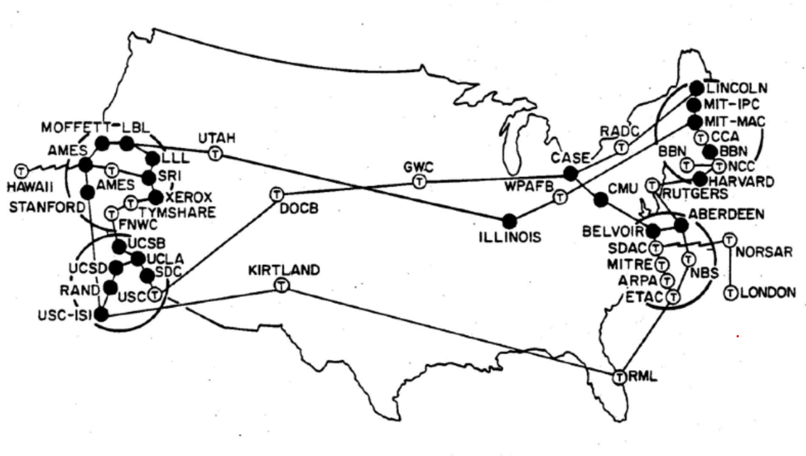

WEB HISTORY
Milestones

1910
Belgian informacist Paul Otlet and his colleague Henri La Fontaine founded the Mundaneum with the aim to gather and classify all of the worlds knowledge.

1942
Frequency hopping was made by both Hedy Lamarr and George Antheil which was a great wartime technological advancement and major component for wireless comunication

1945
Vannevar Bush's article "As We May Think” described his Memex (or memory expansion) device as one capable of handling more information for storage.


1960s
ARPANET was successfully established as a way for long distance internet connection, connecting four universities and enabling the first message to be sent over the network.
Hypertext is text that contain links to other sources on any electronic device

1971
The first email was sent in 1971 by Ray Tomlinson on the ARPANET.

1983
Vint Cerf and Robert Kahn developed the Transmission Control Protocol (TCP) and Internet Protocol (IP), which became the foundation of the modern internet.
The National Science Foundation(nsf) was founded as an independent federal agency and is a way for governing the internet.

1989
The World Wide Web was invented by Tim Berners-Lee as a interconnected system to echange content over the internet globally.


1990
Tim Berners-Lee founded the foundation for the web in 1990. and later helped the internet for all websites.
Archie Index was the first search query engine.

1991
the first website was made in 1991 and was also made by Tim Berners-Lee.